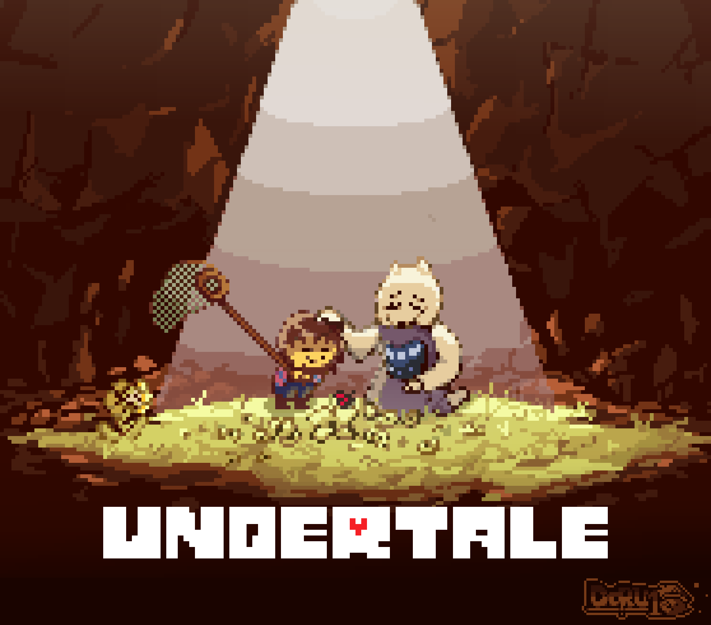
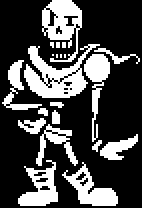
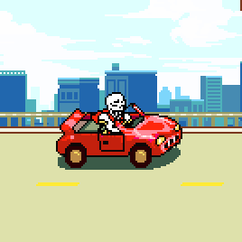

HOME/ |
FRISK/ |
BOSSES/ |
AÇÕES/ |
CRIADOR |

PAPYRUS
Papyrus é um esqueleto otimista e cheio de confiança que sonha em entrar para a Guarda Real. Apesar de agir como um grande guerreiro, ele é bondoso e prefere capturar os humanos em vez de machucá-los. Durante sua batalha, testa a determinação de Frisk usando ataques com ossos e plataformas azuis, mas demonstra compaixão e acredita que todos podem fazer o bem.
TEMA DA BATALHA
VOLTAR


História detalhada
Papyrus é um dos membros da Guarda Real e vive em Snowdin ao lado de seu irmão, Sans. Sonhador e extremamente otimista, ele deseja capturar um humano para finalmente ser reconhecido por Undyne e aceito oficialmente na Guarda Real.
Durante a jornada de Frisk, Papyrus cria diversos quebra-cabeças e armadilhas na tentativa de impedir seu avanço. Apesar de seu entusiasmo, suas armadilhas costumam ser inofensivas ou fáceis de superar, revelando seu jeito divertido e inocente.
Quando finalmente enfrenta Frisk, Papyrus inicia uma batalha usando ataques de ossos e caixas azuis, ensinando ao jogador a mecânica da alma azul. Mesmo assim, ele não deseja machucar ninguém e prefere capturar o humano em vez de matá-lo.
Se Frisk decidir poupá-lo, Papyrus reconhece sua bondade e os dois se tornam amigos. Depois disso, ele acompanha a aventura em diversos momentos, ajuda o protagonista e demonstra que acredita no melhor das pessoas.
Na Rota Pacifista Verdadeira, Papyrus ajuda a reunir todos os amigos para salvar o Subsolo. Após a destruição da barreira, ele vai para a superfície junto com os outros monstros, realizando o sonho de conhecer o mundo humano e continuar espalhando sua alegria.
Papyrus é conhecido por sua personalidade carismática, confiante e gentil. Embora sonhe em ser um grande guarda, seu verdadeiro talento é inspirar os outros com sua determinação, amizade e bom coração.